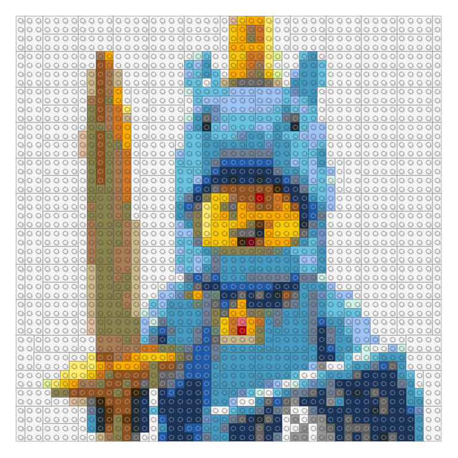
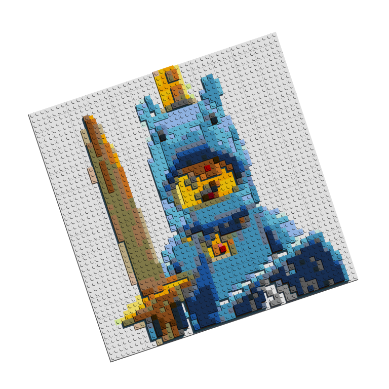

The bricks_from_* series of functions creates 3D models of LEGO bricks from a variety of input formats.
Begin with a brickr mosaic from an image. Rather than graphically rendering the mosaic using build_mosaic(), use bricks_from_mosaic(). This function takes two other inputs:
mosaic_height is the number of bricks stacked at the mosaic’s highest point. The default is 6.highest_el specifies if ‘light’ or ‘dark’ color bricks should be the tallest in the model. The default is ‘light’.demo_img = tempfile()
download.file("http://ryantimpe.com/files/mf_unicorn.PNG", demo_img, mode="wb")
mosaic <- png::readPNG(demo_img) %>%
image_to_mosaic()
mosaic %>% build_mosaic()
mosaic %>%
bricks_from_mosaic(highest_el = "dark") %>%
build_bricks()
#From dput(round(rgl::par3d("userMatrix"),1)) after manual rotation
custom_rotation <- structure(c(0.9, 0.3, -0.3, 0, -0.3, 0.9, -0.3,
0, 0.2, 0.4, 0.9, 0, 0, 0, 0, 1), .Dim = c(4L, 4L))
rgl::par3d(userMatrix = rgl::rotate3d(custom_rotation, 0, 0, pi/4 ,1))